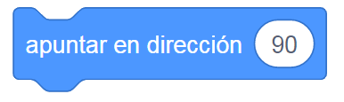

Bienvenido y aprende scratch desde 0

Scratch es un lenguaje visual de programación centrado en fomentar la creatividad y el pensamiento lógico. Aunque cualquier edad es buena para aprenderlo, los niños/as son destinatarios ideales para Scratch. Enseñándoles a usar Scratch estamos ayudándoles a afrontar y resolver situaciones y problemas de todo tipo de una manera lógica y estructurada. Cuando empezamos a enseñar a un niño a programar en Scratch el objetivo principal debería ser que vaya cogiendo soltura y asimilando conceptos, ideas básicas y flujos de trabajo sobre programación y pensamiento computacional de manera divertida y atrayente, para que se genere un interés y base técnica que le anime a seguir.
MOVIMIENTOS

MOVER () PASOS Este bloque mueve tu sprite hacia adelante la cantidad especificada de «pasos» en la dirección a la que está orientado. Un paso equivale a una longitud de un píxel. El valor por defecto es 10 y puede ser sustituido por cualquier número.
Girar a la derecha () grados Este bloque gira la dirección de tu sprite la cantidad especificada de grados en el sentido de las agujas del reloj admitiendo cualquier valor de entrada entre -179 y 180.

Girar a la izquierda () grados Este bloque gira la dirección de tu sprite la cantidad especificada de grados en sentido contrario a las agujas del reloj admitiendo cualquier valor de entrada entre -179 y 180.

Ir a x: () y: () Este bloque mueve tu sprite a la posición X e Y según los valores que hayas especificado. Este bloque no tiene animación en su movimiento – es la forma más sencilla de mover un sprite por la pantalla sin mostrar ninguna animación (es decir, deslizándose). Por lo tanto, este bloque se utiliza siempre que un sprite necesita saltar a otro lugar.
Ir a … Este bloque establece la posición X e Y de tu sprite a la posición especificada, que puede ser la de otro sprite, como son el puntero del ratón o a coordenadas aleatorias.
Deslizar en () segs a … Este bloque mueve tu sprite a un ritmo constante hasta el sprite especificado o el puntero del ratón desde un desplegable. El primer espacio es una entrada numérica que determina el tiempo en segundos que tarda en ir de un sitio a otro tu sprite, y el segundo espacio puede ajustarse a una posición aleatoria o al puntero del ratón.
Deslizar en () segs a x:() y:() Este bloque mueve tu sprite a las coordenadas x e y respectivas en los segundos elegidos. Una desventaja del bloque de deslizamiento, sin embargo, es que pausa el script mientras el sprite se está moviendo, impidiendo que el script haga otras cosas mientras el sprite se desliza.

Apuntar en dirección ()Este bloque rota el sprite según los 360 grados de un círculo. Por defecto, apunta a 90 grados (derecha), pero puedes cambiarlo. -90 es izquierda, 0 es arriba y 180 es abajo. Puede ser confuso porque el sistema usa -180 a 180 grados en lugar de 0 a 360.
Apuntar hacia … Este bloque apunta tu sprite hacia el puntero del ratón.
Sumar a x () Este bloque cambia la posición X del sprite que lo utiliza por el número especificado. El eje X oscila entre -240 y 240, pero los sprites pueden moverse más.

Sumar a y () Este bloque cambia la posición Y del sprite que lo utiliza por el número especificado. El eje Y oscila entre -180 y 180, pero los sprites pueden moverse más.

Si toca un borde rebotar Este bloque comprueba si tu sprite está tocando el borde de la pantalla y si lo está, el sprite apuntará en una dirección que refleje la dirección de la que venía. Utiliza una línea perpendicular al borde para determinar el ángulo de reflexión.
Dar a x el valor () Este bloque comprueba si tu sprite está tocando el borde de la pantalla y si lo está, el sprite apuntará en una dirección que refleje la dirección de la que venía. Utiliza una línea perpendicular al borde para determinar el ángulo de reflexión.

Dar a y el valor () Este bloque comprueba si tu sprite está tocando el borde de la pantalla y si lo está, el sprite apuntará en una dirección que refleje la dirección de la que venía. Utiliza una línea perpendicular al borde para determinar el ángulo de reflexión.

Fijar estilo de rotación a … Este bloque cambia el estilo de rotación del sprite en el proyecto, manteniendo constante la dirección de la variable. Hay tres opciones: En todas direcciones: El sprite puede orientarse en cualquier grado (por defecto). Izquierda-derecha: El sprite solo mira a la izquierda o a la derecha, y se voltea horizontalmente cuando mira a la izquierda. No rotar: El sprite siempre se muestra como si estuviera a 90°.
APARIENCIA

Decir () durante () segundos Podemos utilizar este bloque para que el sprite diga algo en un globo de texto durante los segundos que especifiquemos. Como este bloque muestra un diálogo, se puede utilizar cuando tiene lugar una conversación. Otro uso común es cuando se debe mostrar texto impredecible (como la puntuación de un jugador o explicar algo).
Decir () Muy similar al bloque anterior sólo que en este caso la burbuja de diálogo estará visible hasta que se active otro bloque.

Pensar () durante () segundos Podemos utilizar este bloque para que el sprite piense algo en un globo de pensamiento durante los segundos que especifiquemos.

Pensar () Muy similar al bloque anterior sólo que en este caso la burbuja de pensamiento estará visible hasta que se active otro bloque.
Cambiar disfraz a … Este bloque cambia el disfraz de tu sprite a otro específico. Se usa siempre que un objeto debe cambiar a un disfraz específico (en lugar del siguiente bloque de disfraz , que solo cambia al siguiente disfraz en la lista de disfraces). Se puede colocar una variable (o cualquier bloque de reporte ) que contenga un número o el nombre de un disfraz. Si se ingresa un número no entero en el bloque, el número se redondea.

Siguiente disfraz Este bloque cambia el disfraz de tu sprite al siguiente en el panel de disfraces , pero si el disfraz actual es el último en la lista, el bloque pasará al primero. Se suele usar para dar animación a una sprite ya que la sucesión de disfraces da la sensación de movimiento.
Cambiar fondo a … Este bloque cambia el fondo del escenario al especificado. Este es un bloque de uso común; se utiliza siempre que el escenario debe cambiar a un fondo específico.
Siguiente fondo Este bloque cambia el fondo al siguiente en la lista de fondos, pero si el fondo actual es el último en la lista, el bloque se desplazará al primero.
Cambiar tamaño por () Este bloque cambia el tamaño de tus sprites por la cantidad especificada. El tamaño predeterminado de un sprite es 100; los valores de tamaño por debajo de ese porcentaje son para sprites reducidos, y los valores de tamaño por encima de este son para sprites agrandados.

Fijar tamaño al () % Este bloque establece el tamaño de tu Sprite en la cantidad especificada en porcentaje. El tamaño de sprite predeterminado es 100%; cualquier valor inferior a eso disminuirá el tamaño del sprite en el escenario, y cualquier valor superior aumentará el tamaño del sprite en el escenario.
Sumar al efecto … () Este bloque especificado cambia el efecto gráfico en tus sprites en la cantidad especificada. Hay siete efectos diferentes para elegir: color, ojo de pez, remolino, pixelado, mosaico, brillo y desvanecer.

Dar al efecto … el valor () Este bloque establece el efecto especificado en tu sprite o el escenario en el valor especificado. Hay siete efectos diferentes para elegir: color, ojo de pez, remolino, pixelado, mosaico, brillo y desvanecer.

Quitar efectos gráficos Este bloque restablece los 7 efectos gráficos (color, ojo de pez, remolino, pixelado, mosaico, brillo y desvanecer) en tu sprite.

Mostrar Si el sprite del bloque está oculto , mostrará el sprite; si el sprite ya se muestra, nada cambiará. Este bloque es uno de los bloques de apariencia más simples y más utilizados.

Esconder Si se muestra el sprite del bloque , ocultará el sprite; si el sprite ya está oculto, no sucede nada. Este bloque es uno de los bloques de apariencia más utilizados. Un objeto oculto no se puede tocar .
Ir a capa … Este bloque hace que un sprite vaya a la capa trasera o a la delantera . Un sprite en la capa más trasera estará cubierto por cualquier sprite enfrente de él; un sprite en la capa más frontal no puede ser cubierto por otro sprite.
Ir () a capas hacia … Este bloque mueve tu sprite hacia adelante o hacia atrás un número determinado de capas . Mover un sprite hacia adelante hace que aparezca frente a otros sprites, y moverlo hacia atrás hace que aparezca detrás de otros sprites.
SONIDO

Tocar sonido … hasta que termine Este bloque reproducirá el sonido especificado, pausando el guión hasta que el sonido haya terminado de reproducirse (a diferencia del bloque Iniciar sonido (), que reproducirá el sonido sin pausar su guión).
Iniciar sonido … Este bloque reproduce el sonido especificado y continúa ejecutando el guión (a diferencia del bloque Reproducir sonido () hasta terminar). Como este bloque reproduce un sonido sin demora en su guión, se utiliza principalmente cuando se debe reproducir un sonido mientras se continúa con el guión.
Detener todos los sonidos Este bloque detendrá cualquier sonido que se esté reproduciendo en ese momento en todos los sprites y en el escenario . Al presionar la señal de alto o el bloque de detener () también se detendrán todos los sonidos, pero no se usa generalmente con el propósito de detener los sonidos, ya que también detendrá todos los scripts.

Sumar al efecto … () Este bloque ajusta el efecto de sonido elegido por la cantidad especificada para todos los sonidos del objeto. Opciones: Balance izquierda/derecha: Mejora con auriculares. Valores negativos desplazan el sonido a la izquierda, positivos a la derecha. Altura (tono): Modifica el tono del sonido. Valores negativos bajan el tono, positivos lo suben.
Dar al efecto … el valor () Este bloque ajusta el efecto de sonido especificado para todos los sonidos del sprite en la cantidad indicada. Opciones: Balance izquierda/derecha: Mejora con auriculares. 0 reproduce el sonido normalmente. Valores negativos lo desplazan a la izquierda, positivos a la derecha. Altura (tono): Modifica el tono del sonido. Valores negativos bajan el tono, positivos lo suben. También cambia la velocidad del sonido: números más altos aumentan la velocidad, números más bajos la disminuyen.

Quitar efecto de sonido Este bloque quita cualquier efecto de sonido que se esté ejecutando a través de los bloques de efectos de sonido.

Cambiar volumen por () Este bloque cambia el volumen de un sprite por la cantidad especificada. Esto solo afecta al sprite (o el escenario ) en el que se encuentra el bloque.

Fijar volumen al () % Este bloque establece el volumen del objeto en la cantidad especificada. Solo afecta al sprite (o el escenario ) en el que se encuentra el bloque.
EVENTOS

Al hacer clic en la bandera verde El bloque de bandera verde, también conocido como Bloque de Inicio, activa los scripts cuando se pulsa la Bandera Verde. Este bloque inicia otros scripts y habilita todo el programa. Sin él, un proyecto solo podría ejecutarse detectando la pulsación de una tecla, haciendo clic en un sprite o usando un bloque de temporizador, y solo duraría hasta que todos los scripts de inicio terminen.

Al presionar la tecla … Los scripts colocados debajo de este bloque se activarán cuando se pulse la tecla especificada. Las teclas que se pueden detectar con este bloque incluyen todo el alfabeto inglés (a b c, etc.), las teclas numéricas ( 0 1 2, etc.), las teclas de dirección ( ← ↑ → ↓ ) y la tecla de espacio. Tras una actualización, este bloque incluye ahora una opción cualquiera, que permite pulsar cualquier tecla para accionar el bloque.

Al hacer clic en este objeto Los scripts que usan este bloque se activarán cuando se haga clic en su sprite o en un clon del mismo. Contrariamente a su nombre definitivo, el bloque también ejecutará el script del clon cuando se haga clic en él. Hacer clic en áreas transparentes del sprite (objeto) no desencadena este evento, excepto para las áreas transparentes rodeadas mediante el uso de las herramientas rectángulo hueco y óvalo en el editor de mapas de bits.
Cuando el fondo cambie a … Los scripts que usen este bloque se activarán una vez que el fondo especificado haya cambiado a en el Escenario.

Cuando … > () Este bloque inicia el script que está debajo cuando un valor (elegido por el menú desplegable) es mayor que otro valor (introducido por la entrada numérica). Las opciones del menú desplegable son: volumen del sonido y cronómetro. Este bloque sólo se volverá a ejecutar después de que su condición deje de cumplirse, y luego comience a cumplirse de nuevo. Si el script se está ejecutando cuando la condición deja de cumplirse y comienza a cumplirse, esto será ignorado y el script no se reiniciará.

Al recibir … Este bloque activa los script de debajo cuando recibe un mensaje enviado por un script de llamada. Si el mismo mensaje se envía de nuevo mientras el script está todavía en ejecución, el script se reiniciará sin llegar a los bloques del final.
CONTROL
Esperar () segundos Este bloque pausa tu script durante la cantidad de segundos especificada – la espera también puede ser un número decimal. Se utiliza siempre que un sprite debe esperar a otra acción (por ejemplo en un diálogo).

Esperar hasta que Este bloque pone en pausa su script hasta que la condición booleana especificada sea verdadera.
Crear clon de … Este bloque crea un clon del sprite en el argumento. También puede clonar el sprite en el que se está ejecutando, creando clones de clones, recursivamente.

Al comenzar como clon Este bloque hace que los scripts adjuntos a este bloque sean activados por los clones cuando éstos se crean.

Detener … Este bloque es el único bloque que cambia de forma dependiendo del argumento. Es de terminación para el argumento «todos» y para «este programa» en cambio se transforma en apilable para el argumento «otros programas en el objeto».

Eliminar este clon Este bloque es el único bloque que cambia de forma dependiendo del argumento. Es de terminación para el argumento «todos» y para «este programa» en cambio se transforma en apilable para el argumento «otros programas en el objeto».
Por siempre Los bloques dentro de este bloque estarán en un bucle infinito, que solo se detiene al hacer clic en la señal de stop, al activar el bloque "Detener todo" o al usar un bloque de "parada de script" dentro del bucle. El bloque no tiene protuberancia en la parte inferior, ya que cualquier bloque colocado debajo nunca se ejecutará. Tiene un ligero retardo, por lo que para una ejecución óptima se recomienda usar pilas de bloques simples.

Repetir () Los bloques que se mantienen dentro de este bloque harán un bucle una cantidad determinada de veces (las que pongas en el espacio), antes de permitir que el script continúe. Este bloque tiene un ligero retardo.

Si … entonces Si su condición booleana (lo que pongamos en el hexágono) es verdadera, los bloques que contiene se ejecutarán, y entonces el script involucrado continuará. Si la condición es falsa, los scripts dentro del bloque serán ignorados. La condición sólo se comprueba una vez; si la condición se convierte en falsa mientras el script dentro del bloque se está ejecutando, seguirá ejecutándose hasta que haya terminado.
Repetir hasta que … Si su condición booleana (lo que pongamos en el hexágono) es verdadera, los bloques que contiene se ejecutarán, y entonces el script involucrado continuará. Si la condición es falsa, los scripts dentro del bloque serán ignorados. La condición sólo se comprueba una vez; si la condición se convierte en falsa mientras el script dentro del bloque se está ejecutando, seguirá ejecutándose hasta que haya terminado.
Si … entonces si no Este bloque comprueba la condición booleana; si la condición es verdadera, se activará el código mantenido dentro de la primera C (en el espacio para los scripts); si la condición es falsa, se activará el código dentro de la segunda C.
ACTIVIDAD 1
HACER UNA ANIMACION DE UN ZOOLOGICO DONDE CAMBIE A 3 ESCENARIOS DIFERENTES Y DETALLE CADA ANIMAL POR ESCENARIOPONERLE SONIDO A CADA ANIMAL POR ESCENARIO Y QUE CUMPLA CON CADA ANIMACION
nota
1. se evaluara la creatividad de cada estudiante
2. si agrega mas sprites y funciones a los escenarios
3. se verificara el codigo y la condicion que cumpla su funcion y que este en perfecto estado y cumpla con los requisitos establecidos
4. se tendra encuenta el tiempo establecido para cumplir la actividad
5. se preguntara a un estudiane una funcionalidad y para que sirve